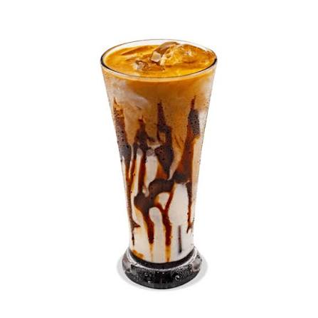

Tentang Kami
kopi susu gula aren adalah minuman kopi dingin khas indonesia yang memadukan kopi pekat (espreso atau ekstrak kopi ),susu segar, dan sirup gula aren yang umumnya disajikan dingin dengan es batu gula aren sejak sekitar tahun 2016-2017.

Mengapa Memilih Kami?
- tekstur lebih ringan dan segar
- Ramah untuk peminum kopi pemula
- Harga terjangkau dan mudah ditemukan
- sensasi menyegarkan di cuaca tropis
Cara Pemesanan
- Menyebutkan menu yang mau dipesan
- Memilih takaran gula
- Menentukan dinikmati di tempat apa dibawa pulang
Produk dan Harga
| Produk | Ukuran | Harga |
|---|---|---|
| ABC Kopi susu Gula Aren | 243gram | Rp13.100 |
| TOP Coffe kopi susu gula aren | 9x27gram | Rp10.500 |
.jpg)
Hubungi Kami
Jl.Yos sudarso,pesangrahan,kec.Brebes,Jawa Tengah
https://www.google.com/maps/place/Jl.+Yos+Sudarso,+Brebes,+Kec.+Brebes,+Kabupaten+Brebes,+Jawa+Tengah+52212/@-6.874153,109.0442031,16.88z/data=!4m15!1m8!3m7!1s0x2e6fba7fb59bc9e3:0xf43167a8337c899!2sJl.+Yos+Sudarso,+Brebes,+Kec.+Brebes,+Kabupaten+Brebes,+Jawa+Tengah+52212!3b1!8m2!3d-6.8740527!4d109.0468144!16s%2Fg%2F11g6yp1kzl!3m5!1s0x2e6fba7fb59bc9e3:0xf43167a8337c899!8m2!3d-6.8740527!4d109.0468144!16s%2Fg%2F11g6yp1kzl?entry=ttu&g_ep=EgoyMDI2MTExNy4wIKXMDSoASAFQAw%3D%3D